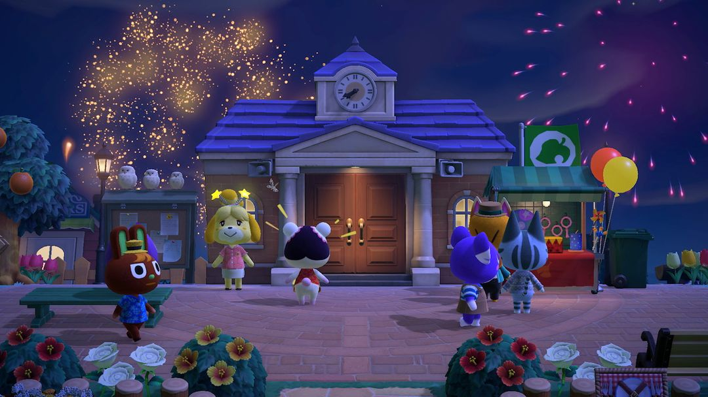
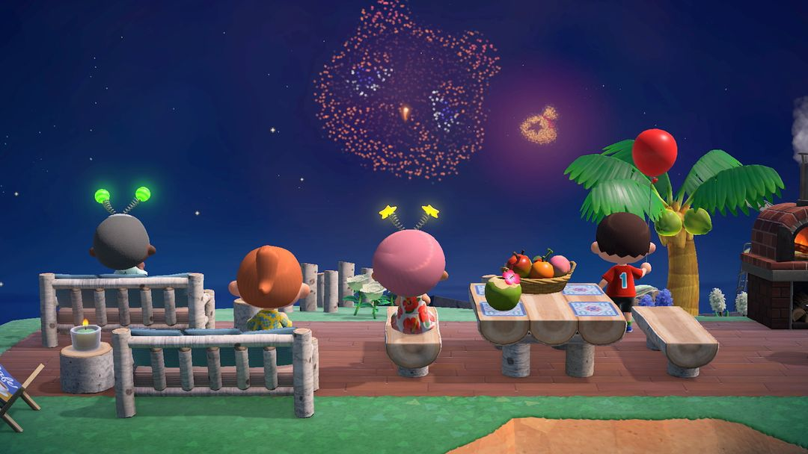
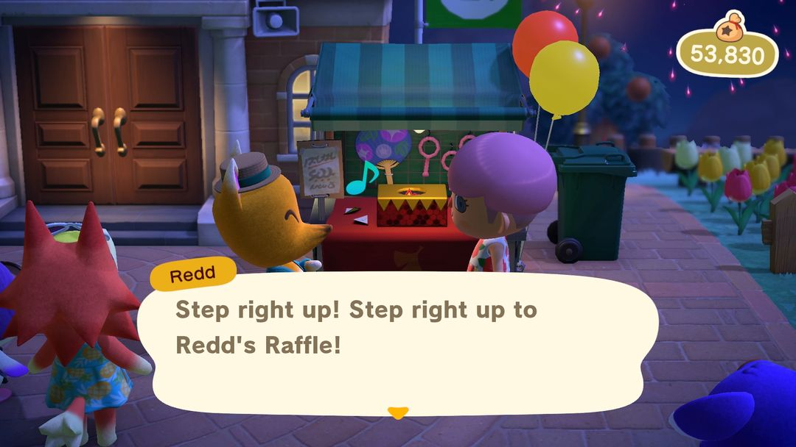
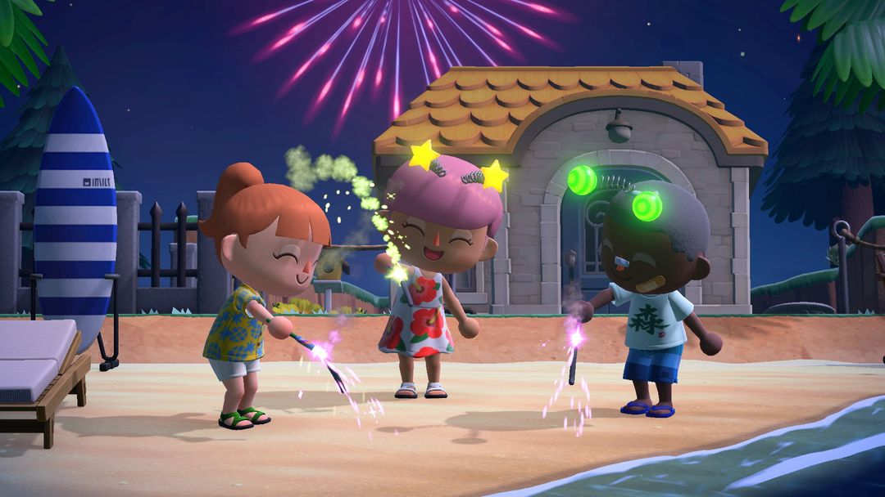

烟花大会：8 月每个星期日晚上
西施惠送发光头饰、狐利摆抽奖摊，自己画的图案也能放上天
8 月的每个星期日晚上，岛上都会办烟花大会。这一晚能找西施惠领一个发光头饰，能在狐利的摊子上抽奖，还能把自己画的「我的设计」交上去，让它变成烟花在夜空里炸开。
要提前准备的东西不多：口袋里留出一格持有物，好接西施惠送的头饰；再带上些铃钱，狐利的抽奖一次 500。想放自己的图案烟花的话，白天就把设计画好，赶在开场前交上去。
01哪天办
烟花大会在每年 8 月的每个星期日，南半球和北半球是同一天，只是南半球那时正值冬天。晚上 7 点开始放，12 点结束。
一年办四场还是五场，要看那年 8 月有几个星期日。每一场的玩法都一样，头饰、抽奖、图案烟花每个星期日都能再来一遍，这一场没抽到想要的奖品，下一场接着抽。
当天白天就能看到准备的动静：西施惠一整天站在服务处门口，服务处里她的柜台这天歇业；ABLE SISTERS 会挂出一款浴衣或和服，男性休闲和服、歌舞伎浴衣、牵牛花浴衣三种里出一种。想穿着浴衣看烟花，白天就先去买好。

烟花大会当晚，岛民都聚到服务处前的广场（图：Nookipedia）
02找西施惠：领头饰、交设计
烟花大会开始以后去找西施惠说话，她会送你一个发光头饰，星星、爱心、花朵、球四种里随机给一个。持有物满了她就塞不过来，空出一格，12 点前再去找她领。
把自己的图案放成烟花
和西施惠说话时，选「我想出了烟花的设计哦！」，就能从「我的设计」里挑图案交给她。
一次最多交 10 张，还能排好先后顺序，空着的位置会放普通烟花。顺序能自己定，最想让大家看到的那张可以排在前面；几张图案能拼成一组的话，挨着排，放出来是连着的一段。白天交上去的，当晚 7 点一开始就跟着放；烟花开始以后再交，交完就排进去。过了 12 点就不收了。

交上去的设计会变成烟花，混在普通烟花里一起放（图：Nookipedia）
小提示图案挑形状简单、颜色亮的，背景留成透明，放到天上更容易认出是什么。想看清楚，把右摇杆往上推，镜头会抬起来，整片夜空都能收进画面。
03狐利的九尾抽奖
狐利在广场上摆了个抽奖摊，不过烟花大会开始以后才营业，7 点前去找他，他只会说还在准备。
抽一次 500 铃钱，没有空奖，每次都能拿到东西；手气好的时候，他还会问你要不要再抽一次。持有物满了不能抽，去之前把口袋清一清。
| 类别 | 奖品 |
| 烟花 | 红色烟花棒、蓝色烟花棒、地面烟花筒 |
| 玩具 | 肥皂泡、扇子、纸风车、派对吹笛 |
| 气球 | 蓝色、红色、黄色、绿色、粉红色气球 |
| 冰棒 | 苏打冰棒、橘子冰棒、巧克力冰棒 |
| 棉花糖 | 棉花糖、哈密瓜棉花糖、弹珠汽水棉花糖、草莓棉花糖 |
| 珍珠奶茶 | 珍珠奶茶、珍珠拿铁、珍珠草莓牛奶、珍珠芒果牛奶、珍珠抹茶牛奶 |
奖品一共 24 种，冰棒、棉花糖、珍珠奶茶这些吃的，是 1.11 版加进来的。吃的、玩的、放的都有，想凑齐一整套拍照道具，得多来几场慢慢抽。

狐利的抽奖摊，烟花开始后才开张（英文版画面）（图：Nookipedia）
注意奖品是随机抽的，盯着某一样想要的话只能多抽几次。去之前带够铃钱，抽十次就是 5000。
04抽到的东西怎么玩
烟花棒拿在手上就会冒火花，几个人站成一排一起举着，拍照很好看。
地面烟花筒放在地上点着，会往上喷火花，摆在拍照的位置前面当个景。
气球可以拿着到处走，不过摔一跤它就会飞走，拿着的时候当心别摔跤。
冰棒、棉花糖、珍珠奶茶是拿在手上的小道具，换上浴衣拿一支，拍夏夜的照片正合适。

拿着烟花棒，头上戴着西施惠送的发光头饰（图：Nookipedia）
小提示朋友的岛上同一晚也在办烟花大会，可以互相串门，看看别人交上去的设计烟花。动森圈圈的活动日历到了 8 月会列出每一场。
动森圈圈 · 小程序和 iOS App 都搜「动森圈圈」